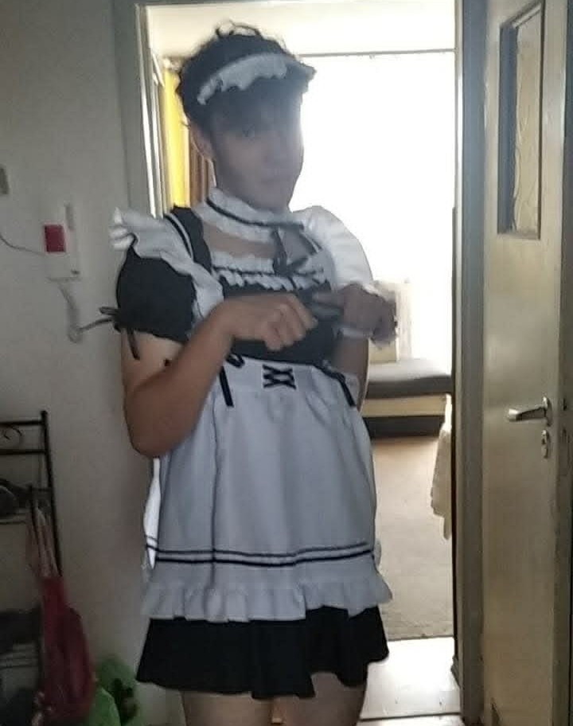
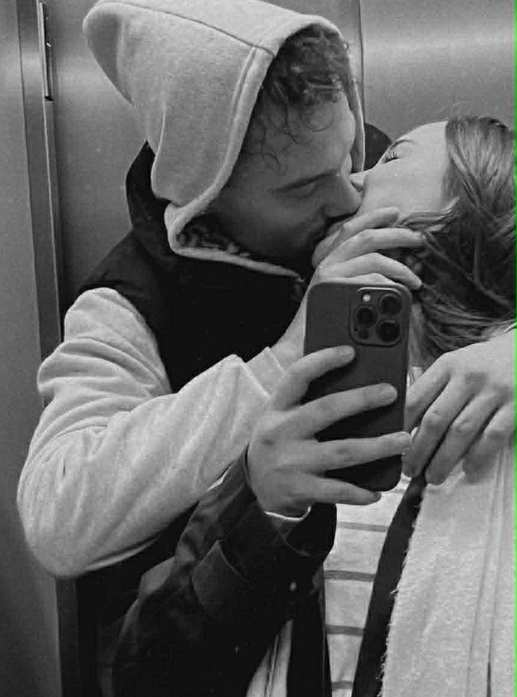
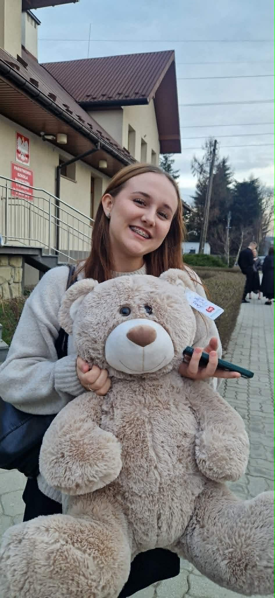
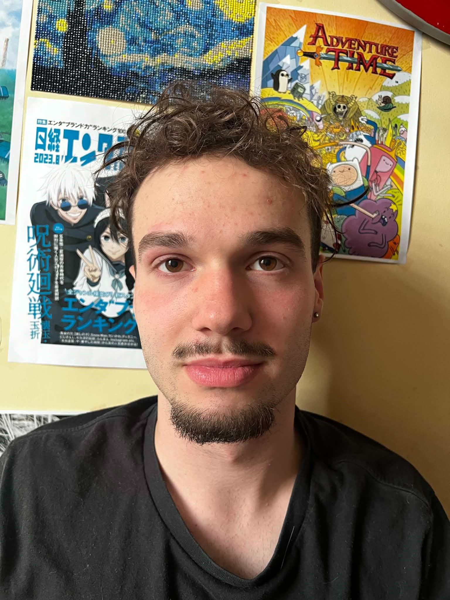

Zdjęcie w tle


Mam Ci coś ważnego do powiedzenia.
Wiem że może być ci ciężko w to uwierzyć po ostatniej sytuacji ale naprawdę wszystko mówię szczerze.
Oto krótka lista rzeczy, przez które nie mogę przestać o Tobie myśleć:
Trzy zdjęcia, które mówią więcej niż tysiąc słów...

"[Często wracam do tego naszego wspólnego zdjęcia, jest że to moje ulubione. Nigdy z nikim nie miałem takiego ujęcia, które tak by mi się podobało. Ale prawda jest taka, że to nie samo zdjęcie jest takie wyjątkowe, jest idealne tylko dlatego, że to ty na nim jesteś.]"

"[Patrzę na to zdjęcie i widzę ten twój absolutnie najpiękniejszy uśmiech. On daje mi taką siłę, jakiej tak bardzo potrzebuję, kiedy zderzam się z moją rzeczywistością. Chciałbym go widzieć bez przerwy, cały czas. To jest mój najważniejszy cel widzieć cię zawsze tak promienną i szczerze szczęśliwą, jak tutaj. Jesteś najwspanialsza]"

"[[a ja to co stary Brzydki chuj idota nie wiem co ty we mnie widzisz ale jestem przy tobie bardzo szczęsliwy i zrobie wszystko zeby naprawic nasza relacje"]"
Muszę ci o czymś opowiedzieć, żebyś lepiej rozumiała, co się we mnie czasem dzieje. Kiedy się widzimy, jest wspaniale – mam motylki w brzuchu i wszystko wydaje się proste. Ale potem wracam do Gliwic, zderzam się z moją rzeczywistością i uderza we mnie cała lawina stresu. Studia, praca, milion spraw do ogarnięcia. To fizyczne i psychiczne wyczerpanie sprawia, że wpadam w dołki i zaczynam wątpić we wszystko, a najbardziej – w samego siebie. Niestety, moja własna frustracja i zmęczenie czasem odbijają się na tobie, a odległość, która nas dzieli, tylko potęguje te trudne emocje. Chcę, żebyś wiedziała, że to nie wynika z braku uczuć do ciebie, ale z tego, że bywam po prostu przytłoczony własnym życiem.
Chcę, żebyś wiedziała jedną najważniejszą rzecz: bardzo mi na tobie zależy i myślę o nas absolutnie przyszłościowo. To, co powiedziałem wczoraj, to była totalna głupota podyktowana natłokiem chwilowych, strasznie negatywnych emocji. Mój mózg był po prostu tak przeciążony stresem i zmęczeniem, że wyrzucił z siebie coś, co zupełnie mija się z prawdą. Prawda jest taka, że cały czas niesamowicie mi się podobasz i nic się w tej kwestii nie zmieniło.
Chcę ci też wytłumaczyć sytuacje, w których – jak to nazywamy – "myślę fiutem". Masz rację, czasem tak właśnie jest, ale dla mnie, w tym całym codziennym chaosie i wycieńczeniu, to jest jedna z głównych ucieczek od rzeczywistości. To taki moment i przestrzeń, w której na chwilę odpuszcza mi cały życiowy ciężar, nie czuję się źle sam ze sobą i mogę być wobec ciebie w stu procentach szczery ze swoimi pragnieniami. Skupienie się na tobie w ten sposób pozwala mi odciąć się od problemów i poczuć z tobą silną więź.
Zależy mi na tobie i moje chwile zwątpienia to walka z moją własną głową i stresem, a nie z tym, kim dla mnie jesteś.
